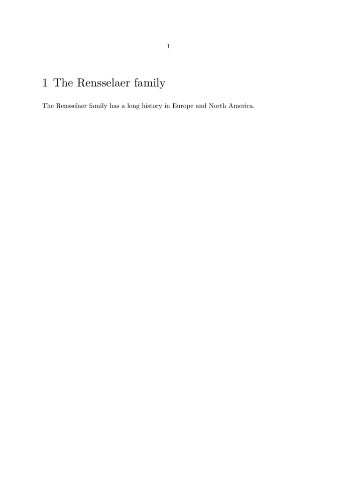
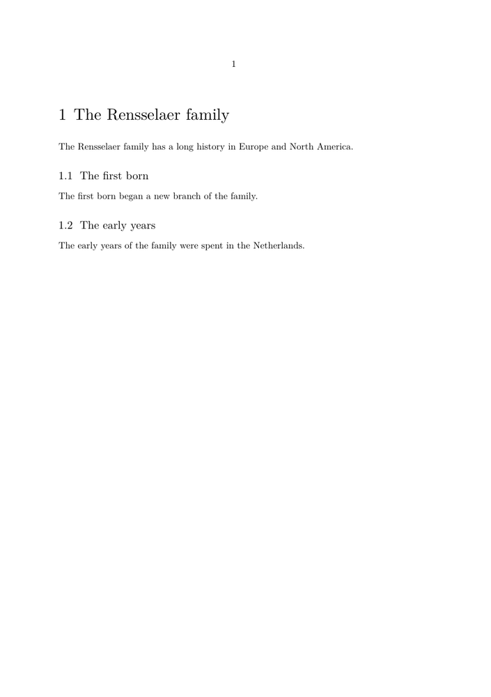
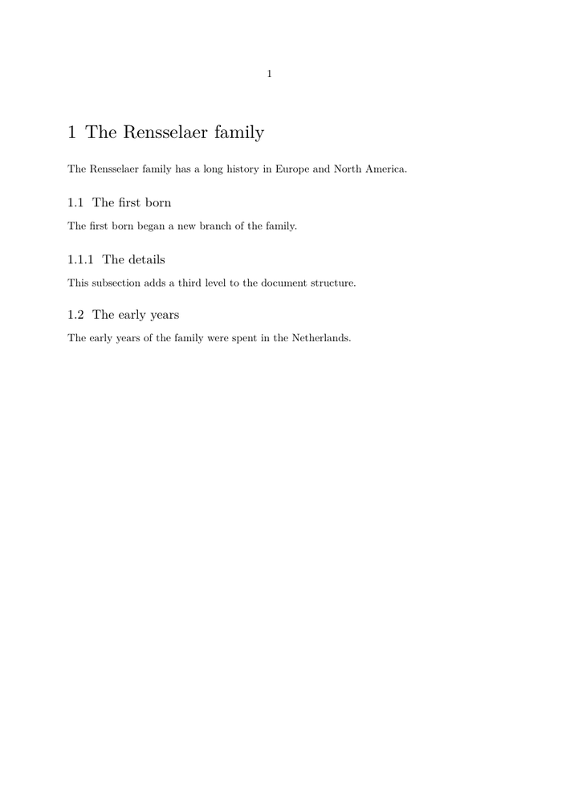
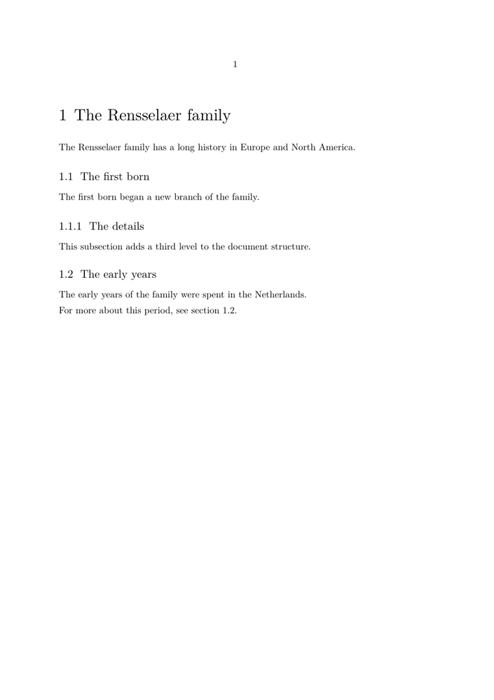

TUTORIAL
Build a small structured ConTeXt document step by step: first a chapter, then sections and a subsection, a cross-reference, front matter, a table of contents, and finally an appendix.
This page is a guided first path through document structure. For the concepts behind the mechanism, see Understanding document structure and section heads.
Contents
1. What you will build
By the end of this tutorial, the document will have this structure:
DOCUMENT
│
├── front matter
│ ├── Contents
│ └── Introduction
│
├── body matter
│ └── 1 The Rensselaer family
│ ├── 1.1 The first born
│ │ └── 1.1.1 The details
│ └── 1.2 The early years
│
└── appendices
└── A Family documents
The examples are cumulative: each step keeps the previous structure and adds one new mechanism.
All examples use A5 paper so that the result is easy to inspect. For an ordinary document, replace:
\setuppapersize[A5]
with the paper size you actually need.
2. Start with a chapter
A ConTeXt document begins between \starttext and \stoptext. Inside it, create a chapter with \startchapter and \stopchapter.
-
\setuppapersize[A5] \starttext \startchapter [title={The Rensselaer family}] The Rensselaer family has a long history in Europe and North America. \stopchapter \stoptext
-

The important point at this stage is simply:
document
│
└── chapter
│
└── The Rensselaer family
ConTeXt supplies the chapter number and the default typographical presentation.
Do not format the chapter yet
This tutorial first builds the document structure. Headline appearance can be configured later with \setuphead; see Headlines formatting.
3. Add sections
A chapter can contain sections. Add two \startsection environments:
-
\setuppapersize[A5] \starttext \startchapter [title={The Rensselaer family}] The Rensselaer family has a long history in Europe and North America. \startsection [title={The first born}] The first born began a new branch of the family. \stopsection \startsection [title={The early years}] The early years of the family were spent in the Netherlands. \stopsection \stopchapter \stoptext
-

The structure is now:
chapter
│
├── section
│ The first born
│
└── section
The early years
The visible numbers 1.1 and 1.2 reflect the
relationship between the sections and their chapter.
4. Add a subsection
A section can itself contain a subsection. Add \startsubsection inside the first section:
-
\setuppapersize[A5] \starttext \startchapter [title={The Rensselaer family}] The Rensselaer family has a long history in Europe and North America. \startsection [title={The first born}] The first born began a new branch of the family. \startsubsection [title={The details}] This subsection adds a third level to the document structure. \stopsubsection \stopsection \startsection [title={The early years}] The early years of the family were spent in the Netherlands. \stopsection \stopchapter \stoptext
-

You now have three structural levels:
1 chapter 1.1 section 1.1.1 subsection 1.2 section
The important distinction is the hierarchy itself. Formatting and numbering can be changed later without changing these structural relationships.
5. Add a cross-reference
A structural item can also be a reference target.
Give the second section a reference key:
\startsection [title={The early years}, reference=sec:early-years]
Then refer to it with \in:
For more about this period, see section \in[sec:early-years].
Here is the complete example:
-
\setuppapersize[A5] \starttext \startchapter [title={The Rensselaer family}] The Rensselaer family has a long history in Europe and North America. \startsection [title={The first born}] The first born began a new branch of the family. \startsubsection [title={The details}] This subsection adds a third level to the document structure. \stopsubsection \stopsection \startsection [title={The early years}, reference=sec:early-years] The early years of the family were spent in the Netherlands. \stopsection \blank[medium] For more about this period, see section \in[sec:early-years]. \stopchapter \stoptext
-

The final sentence prints the current section number:
For more about this period, see section 1.2.
The reference identifies the structural item. It does not depend on the visual shape of the section head.
For more about the reference system, see References.
6. Add front matter and body matter
So far the example has only used the hierarchy of chapters, sections, and subsections.
Larger documents also have major functional regions. ConTeXt provides predefined section blocks for these regions.
In this step, put an introduction in \startfrontmatter and the main chapter in \startbodymatter.
Compile this example locally
This example produces more than one page. The source is therefore shown without an embedded rendering. Compile it with a current ConTeXt LMTX installation and compare the front matter with the body matter.
\setuppapersize[A5] \starttext \startfrontmatter \startchapter [title={Introduction}] This introduction comes before the main body of the document. \stopchapter \stopfrontmatter \startbodymatter \startchapter [title={The Rensselaer family}] The Rensselaer family has a long history in Europe and North America. \startsection [title={The first born}] The first born began a new branch of the family. \startsubsection [title={The details}] This subsection adds a third level to the document structure. \stopsubsection \stopsection \startsection [title={The early years}, reference=sec:early-years] The early years of the family were spent in the Netherlands. \stopsection \blank[medium] For more about this period, see section \in[sec:early-years]. \stopchapter \stopbodymatter \stoptext
The result should make the distinction visible:
FRONT MATTER
Introduction
no printed chapter number
BODY MATTER
1 The Rensselaer family
1.1 The first born
1.1.1 The details
1.2 The early years
Notice that Introduction is still created with
\startchapter. It remains a chapter structurally; the surrounding
front-matter block changes its behaviour.
Do not confuse section blocks with structural levels
frontmatter and bodymatter identify major regions of
the document. They are not additional levels beside chapter, section, and
subsection.
7. Add a table of contents
Now add \completecontent inside the front matter:
\startfrontmatter \completecontent \startchapter [title={Introduction}] ... \stopchapter \stopfrontmatter
The complete example is:
Compile this example locally
This example produces several pages. The source is shown without an embedded rendering. Compile it locally and inspect both the contents page and the following document pages.
\setuppapersize[A5] \starttext \startfrontmatter \completecontent \startchapter [title={Introduction}] This introduction comes before the main body of the document. \stopchapter \stopfrontmatter \startbodymatter \startchapter [title={The Rensselaer family}] The Rensselaer family has a long history in Europe and North America. \startsection [title={The first born}] The first born began a new branch of the family. \startsubsection [title={The details}] This subsection adds a third level to the document structure. \stopsubsection \stopsection \startsection [title={The early years}, reference=sec:early-years] The early years of the family were spent in the Netherlands. \stopsection \blank[medium] For more about this period, see section \in[sec:early-years]. \stopchapter \stopbodymatter \stoptext
The table of contents should contain:
Contents Introduction 1 The Rensselaer family 1.1 The first born 1.1.1 The details 1.2 The early years
This demonstrates an important point: the chapter
Introduction has no printed chapter number in the front matter,
but it can still appear in the table of contents.
A table of contents is therefore not the document structure itself. It is a representation of selected structural information.
For configuration and specialised contents, see Table of contents.
8. Add an appendix
The final step is to add an appendix after the body matter.
Use \startappendices and \stopappendices:
\startappendices \startchapter [title={Family documents}] This appendix contains supplementary material about the family. \stopchapter \stopappendices
Compile this example locally
The completed example produces several pages. Its source is shown without an embedded rendering. Compile it locally and inspect the table of contents and the appendix page.
Here is the completed tutorial document:
\setuppapersize[A5] \starttext \startfrontmatter \completecontent \startchapter [title={Introduction}] This introduction comes before the main body of the document. \stopchapter \stopfrontmatter \startbodymatter \startchapter [title={The Rensselaer family}] The Rensselaer family has a long history in Europe and North America. \startsection [title={The first born}] The first born began a new branch of the family. \startsubsection [title={The details}] This subsection adds a third level to the document structure. \stopsubsection \stopsection \startsection [title={The early years}, reference=sec:early-years] The early years of the family were spent in the Netherlands. \stopsection \blank[medium] For more about this period, see section \in[sec:early-years]. \stopchapter \stopbodymatter \startappendices \startchapter [title={Family documents}] This appendix contains supplementary material about the family. \stopchapter \stopappendices \stoptext
The table of contents should now end with:
A Family documents
and the appendix itself should begin with the same alphabetical chapter number:
A Family documents
The structural level has not changed: Family documents is still
a chapter. Its surrounding appendix block changes the form of its numbering.
9. What you have built
Starting from one chapter, you have progressively built this document:
DOCUMENT
│
├── front matter
│ ├── Contents
│ └── Introduction
│
├── body matter
│ └── chapter
│ ├── section
│ │ └── subsection
│ └── section ◄──── reference target
│
└── appendices
└── chapter
The tutorial has introduced only the mechanisms needed for this first structured document.
| Task | Command or environment |
|---|---|
| Start and end the document | \starttext … \stoptext |
| Create a chapter | \startchapter … \stopchapter |
| Create a section | \startsection … \stopsection |
| Create a subsection | \startsubsection … \stopsubsection |
| Give a structural item a reference key | reference=...
|
| Refer to a numbered structural item | \in |
| Start front matter | \startfrontmatter … \stopfrontmatter |
| Start body matter | \startbodymatter … \stopbodymatter |
| Place a table of contents | \completecontent |
| Start appendices | \startappendices … \stopappendices |
10. Where to go next
You now have the structure. Choose the next page according to what you want to do.
- To understand why these mechanisms are separate, read Understanding document structure and section heads .
- To change the appearance of chapter and section heads, see Headlines formatting .
- To customise numbering, see Section numbering .
- To configure or specialise the contents, see Table of contents .
- For cross-references, see References .